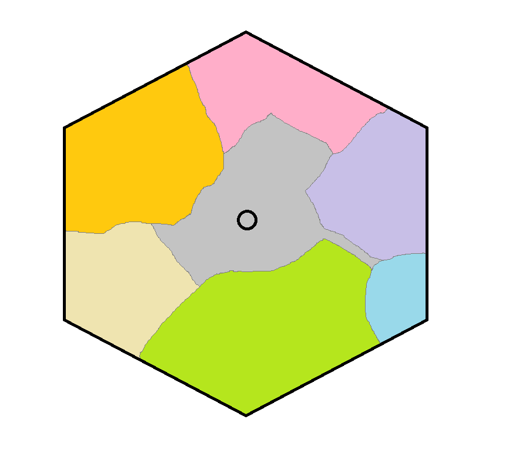
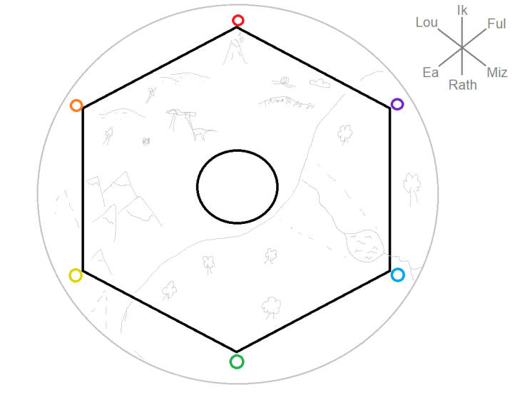

<p style="vertical-align: middle;" *ngIf="langue.l == 'fr'">
    
    (premiers drafts) &nbsp;&nbsp;&nbsp;&nbsp;&nbsp;&nbsp;&nbsp;
    
</p>

<p style="vertical-align: middle;" *ngIf="langue.l == 'en'">
    
    (first drafts) &nbsp;&nbsp;&nbsp;&nbsp;&nbsp;&nbsp;&nbsp;
    
</p>